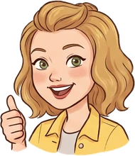
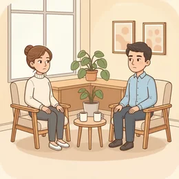
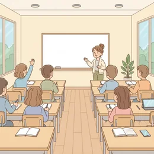

deutschoderwas · Sprechclub · Woche 2 · Strang B · Teil 2 · Donnerstag, 24. September
Das geht nicht. Wie geht's? Es kommt darauf an.
Dieselben drei Verben wie am Dienstag — nur bewegt sich niemand mehr. Gehen, kommen und fahren stecken in den Sätzen, die Deutsche jeden Tag sagen, ohne darüber nachzudenken.
Dein Niveau
Gleiches Thema, andere Sätze. Wechsle jederzeit — probier ruhig beide Seiten aus.
Kein Schritt, und trotzdem „geht“ es
„Das geht nicht.“ „Wie geht's?“ „Es geht um dich.“ Dreimal gehen, dreimal ohne Bewegung. Genau diese Sätze hörst du täglich — und genau die stehen in keinem Wörterbuch richtig erklärt.
Was antwortest du auf „Wie geht's?“ — ehrlich oder höflich?
Welchen dieser Sätze hast du schon oft gehört, ohne ihn genau zu verstehen?
Gibt es in deiner Sprache ein Verb, das genauso viel kann?
Warum benutzen Sprachen ausgerechnet Bewegungsverben für abstrakte Dinge?
Wann merkst du selbst, dass du einen Ausdruck nur nachsprichst, statt ihn zu verstehen?
Welcher deutsche Ausdruck hat dich am längsten verwirrt?
🧭 Das System dahinter:gehen = etwas ist möglich oder funktioniert. kommen = etwas entsteht oder hängt von etwas ab. fahren = eine Erfahrung oder eine starke Reaktion.
„Wie geht's?“ — die Frage, die keine ist
Im Deutschen ist das keine echte Frage nach deiner Gesundheit. Die erwartete Antwort ist kurz. Wer wirklich erzählt, was los ist, überrascht sein Gegenüber — manchmal angenehm, manchmal nicht.
Was sagst du, wenn es dir wirklich nicht gut geht?
Fragst du zurück? Wie?
Ab welcher Nähe darf man ehrlich antworten?
Was wäre in deinem Land unhöflich an der deutschen Kurzantwort?
💡 Die Stufen der Antwort:Danke, gut. (immer richtig) · Ganz gut. (neutral) · Es geht. (nicht so gut, aber ich rede nicht darüber) · Nicht so gut, ehrlich gesagt. (jetzt darf gefragt werden).
Kurz zurück: Dienstag in zwei Minuten
Falls du Teil 1 verpasst hast — das hier reicht, um heute mitzumachen.
zu Fuß gehenmit dem Bus fahrennach Hause kommenzum Arzt gehenin die Stadt fahrenan die Küste fahrengeradeaus gehenumsteigenvorbeikommenabholen
Wohin? — zu, nach, in, an
So ging der SatzIch gehe zum Arzt, fahre nach Hamburg und dann an den See.
Womit? — mit + Dativ, oder zu Fuß
So ging der SatzIch fahre mit der Bahn, und den Rest gehe ich zu Fuß.
Sag in einem Satz, wohin du morgen fährst und womit.
Erklär in zwei Sätzen den Weg von hier zur nächsten Haltestelle.
Was ist der Unterschied zwischen nach Hause und zu Hause?
🔁 Zu zweit, dreißig Sekunden: Einer nennt ein Ziel, der andere baut den Satz mit der richtigen Präposition. Fünf Ziele, dann fängt die heutige Stunde an — und ab da bewegt sich niemand mehr.
Zwölf Sätze, in denen niemand irgendwohin geht
Nicht das Verb lernen, sondern den ganzen Satz. Sagt jeden laut — und gleich hinterher, wann ihr ihn benutzen würdet.

Das geht.
„Donnerstag um zehn? Ja, das geht.“
💡 Die häufigste Zusage im deutschen Alltag. Verneint: Das geht nicht. — höflicher als „Nein“ und trotzdem eindeutig.
Wie geht's?
„Hallo, wie geht's? — Danke, gut, und dir?“
💡 Vollständig heißt es Wie geht es dir/Ihnen? — mit Dativ. Die Antwort ist im Alltag fast immer kurz.
Es geht um …
„In der Mail geht es um den neuen Termin.“
💡 Immer mit um + Akkusativ. Und die Frage dazu: Worum geht es? — nicht „Um was geht es?“, auch wenn man das oft hört.
Es kommt darauf an.
„Kommst du mit? — Es kommt darauf an, wann ihr losfahrt.“
💡 Der wichtigste Satz für alle, die sich noch nicht festlegen wollen. Weiter geht es mit ob oder wann: Es kommt darauf an, ob ich früher fertig werde.
Das kommt vor.
„Entschuldigung, ich habe es vergessen. — Kein Problem, das kommt vor.“
💡 Der freundlichste Satz, um jemandem einen Fehler zu verzeihen. Auch: Das kann passieren. Genauso gebräuchlich.
Wie kommst du darauf?
„Du willst kündigen? Wie kommst du denn darauf?“
💡 Klingt je nach Ton neugierig oder ungläubig. Neutraler: Wie kommst du zu der Einschätzung?

Das kommt nicht infrage.
„Am Wochenende arbeiten? Das kommt nicht infrage.“
💡 Sehr deutlich, fast hart. Unter Freunden geht es, gegenüber dem Chef besser: Das wäre für mich schwierig.
gut ankommen
„Dein Vorschlag ist beim Team gut angekommen.“
💡 Nicht zu verwechseln mit ankommen = am Ziel sein. Hier: bei jemandem + Dativ gut ankommen.
auf die Idee kommen
„Wie bist du denn auf die Idee gekommen?“
💡 Immer auf + Akkusativ: auf eine Idee, auf den Gedanken, auf die Lösung kommen. Nie „in die Idee“.
zur Sprache kommen
„Das Thema ist gestern gar nicht zur Sprache gekommen.“
💡 Etwas formeller, typisch für Sitzungen und Berichte. Im Alltag sagt man eher: Darüber haben wir gar nicht geredet.

gut damit fahren
„Ich lerne jeden Morgen zwanzig Minuten und fahre gut damit.“
💡 Immer mit damit oder mit + Dativ. Auch verneint: Damit bin ich schlecht gefahren.
aus der Haut fahren
„Wenn er das noch einmal sagt, fahre ich aus der Haut.“
💡 Sehr bildlich und sehr umgangssprachlich. Etwas milder: Da könnte ich an die Decke gehen. — auch mit gehen.
💡 Spiel: Einer liest nur die Erklärung vor, der andere muss den ganzen Satz rekonstruieren — nicht nur das Verb. Wer den Satz komplett hat, bekommt einen Punkt.
Ein System steckt doch dahinter
Diese Ausdrücke wirken willkürlich — sind sie aber nicht. Erst die drei Muster, dann drei Satzpaare, bei denen fast alle danebenliegen.
⚙️
gehen
Etwas funktioniert, ist möglich oder erlaubt.
Das geht. · Der Computer geht nicht. · Es geht um Geld.
🌱
kommen
Etwas entsteht, ergibt sich oder hängt von etwas ab.
Es kommt darauf an. · Das kommt vor. · Wie kommst du darauf?
🔥
fahren
Eine Erfahrung oder eine plötzliche, starke Reaktion.
Damit fahre ich gut. · Ich fahre gleich aus der Haut.
✅ So sagt man es
Wie geht es dir?
Warum das stimmtDer Ausdruck ist unpersönlich: es ist das Subjekt, die Person steht im Dativ — mir, dir, ihm, Ihnen.
❌ So nicht
Wie gehst du?
Das ProblemDas würde heißen: auf welche Art bewegst du dich. Mit der Frage nach dem Befinden hat es nichts zu tun.
✅ So sagt man es
Worum geht es in dem Text?
Warum das stimmtBei Sachen verschmelzen Frage und Präposition zu wo(r)-: worum, worauf, wovon.
❌ So nicht
Um was geht es in dem Text?
Das ProblemSehr verbreitet gesprochen, aber im Schriftlichen gilt es als falsch. Um wen geht nur bei Personen.
✅ So sagt man es
Es kommt darauf an, ob ich früher fertig werde.
Warum das stimmtdarauf kündigt den Nebensatz an. Danach folgt ob, wann oder wie — und das Verb geht ans Ende.
❌ So nicht
Es kommt an, ob ich früher fertig werde.
Das ProblemOhne darauf bedeutet ankommen „am Ziel sein“. Das kleine Wort trägt hier die ganze Bedeutung.
Frag dich, was der Satz eigentlich sagt:
Geht es um möglich oder unmöglich? → gehen: Das geht (nicht).
Geht es um Bedingungen, um etwas hängt ab von? → kommen: Es kommt darauf an.
Geht es um eine Erfahrung über längere Zeit? → fahren: Damit fahre ich gut.
Geht es um plötzliche Wut? → auch fahren: Da fahre ich aus der Haut.
Wenn du unsicher bist, nimm gehen. Es deckt mehr Situationen ab als die beiden anderen zusammen.
⚖️ Kurzübung: Einer nennt eine Situation („Der Drucker ist kaputt“, „Ich bin unsicher“, „Jemand hat mich geärgert“). Der andere reagiert mit genau einem der zwölf Sätze.
Vier Situationen, vier fertige Sätze
Zusagen, ausweichen, das Thema nennen, reagieren. Vier Bausteine, die in fast jedem Gespräch vorkommen.
1 · ✅ Zusagen und absagen Das geht.Das geht leider nicht.Das wäre möglich.
So klingt esDonnerstag um zehn? Ja, das geht. Freitag geht leider nicht.
2 · 🤷 Sich nicht festlegen Es kommt darauf an.Mal sehen.Das weiß ich noch nicht.
So klingt esEs kommt darauf an, wann ich fertig werde. Ich sage dir bis heute Abend Bescheid.
3 · 🎯 Das Thema nennen Es geht um …Worum geht es?Ich rufe an wegen …
So klingt esIch rufe an — es geht um den Termin am Donnerstag.
4 · 😊 Beruhigen Das kommt vor.Kein Problem.Das kann passieren.
So klingt esKein Problem, das kommt vor. Machen wir einfach einen neuen Termin.
1 · ✅ Zusagen mit Bedingung Das ließe sich einrichtenVon meiner Seite spricht nichts dagegenDas geht, solange …
So klingt esDas ließe sich einrichten — solange wir vor drei fertig sind.
2 · 🤷 Elegant ausweichen Es kommt darauf an, ob …Das hängt davon ab, wie …Da müsste ich erst schauen
So klingt esDas hängt davon ab, wie lange die Sitzung dauert — ich melde mich, sobald ich mehr weiß.
3 · 🎯 Zum Punkt kommen Worum es mir geht, ist …Der Punkt ist …Ich komme gleich zur Sache
So klingt esWorum es mir eigentlich geht, ist die Frage, wer das am Ende bezahlt.
4 · 😊 Deeskalieren Das kommt in den besten Familien vorHalb so wildDamit sind wir bisher gut gefahren
So klingt esHalb so wild, das kommt vor. Wir machen es wie immer — damit sind wir bisher gut gefahren.
Verb worum es geht Ton und Nähe Höflichkeit
🗣️ Sofort anwenden: Einer stellt vier schnelle Fragen hintereinander. Der andere darf nur mit Sätzen aus diesem Abschnitt antworten — kein einziges freies Wort.
Vier Gespräche — zwei Runden
Runde 1: Lest den Dialog zu zweit laut. Runde 2: Deckt die Zeilen von B ab und sprecht frei — die Hinweise reichen.
Dialog 1 · „Geht das noch heute?“
Eine Kollegin braucht etwas dringend. Du hast eigentlich keine Zeit — aber ein bisschen vielleicht doch.
A
Kannst du das noch heute fertig machen?
B
Es kommt darauf an, wie lang es ist. Zeig mal.
🗣️ Nicht sofort Ja oder Nein. Erst eine Bedingung nennen — dann hast du Luft.tippen = Hilfe zeigen
A
Zwei Seiten. Aber es müsste bis fünf raus sein.
B
Bis fünf geht. Bis vier würde nicht gehen.
🗣️ Das geht und das geht nicht im selben Atemzug — so klingst du hilfsbereit und trotzdem klar.tippen = Hilfe zeigen
A
Fünf ist super. Worum geht es überhaupt genau?
B
Es geht um die Zahlen aus dem letzten Quartal.
🗣️ Es geht um + Akkusativ. Der Standardsatz, um ein Thema zu nennen.tippen = Hilfe zeigen
A
Ah, gut. Sag Bescheid, wenn was fehlt.
B
Mach ich. Bis fünf hast du es.
🗣️ Am Ende die Zusage wiederholen — dann muss niemand nachfragen.tippen = Hilfe zeigen
Dialog 2 · „Wie geht's? — ehrlich“
Ihr trefft euch zufällig. Die Standardantwort wäre „gut“ — aber heute stimmt sie nicht.
A
Hey! Lange nicht gesehen. Wie geht's dir?
B
Ganz ehrlich? Es geht so. Die letzten Wochen waren viel.
🗣️ Es geht so ist die höfliche Art zu sagen: nicht gut, aber ich jammere nicht.tippen = Hilfe zeigen
A
Oh. Willst du erzählen, oder lieber nicht?
B
Kurz gern. Es geht um die Arbeit — da ist gerade viel in Bewegung.
🗣️ Du bestimmst, wie viel du sagst. Kurz gern setzt freundlich eine Grenze.tippen = Hilfe zeigen
A
Kann ich irgendwas tun?
B
Lieb von dir. Ich komme darauf zurück, wenn es soweit ist.
🗣️ Auf etwas zurückkommen — annehmen, ohne sofort etwas zu fordern.tippen = Hilfe zeigen
A
Unbedingt. Und sonst?
B
Sonst läuft's. Und bei dir?
🗣️ Das Gespräch zurückgeben. Sonst redest du zehn Minuten allein.tippen = Hilfe zeigen
Dialog 3 · „Das kommt nicht infrage“
Jemand schlägt etwas vor, das für dich völlig ausgeschlossen ist. Du willst klar sein, ohne unhöflich zu werden.
A
Könntest du am Sonntag einspringen?
B
Sonntag ist schwierig. Da habe ich meine Familie.
🗣️ Erst weich beginnen. Schwierig ist ein Nein, das noch Raum lässt.tippen = Hilfe zeigen
A
Nur diesmal? Es wäre wirklich eine große Hilfe.
B
Ich verstehe das, aber Sonntag kommt für mich nicht infrage.
🗣️ Jetzt deutlich. Ich verstehe das, aber … nimmt dem Nein die Härte.tippen = Hilfe zeigen
A
Schade. Und Samstag?
B
Samstag ginge, wenn es nur der Vormittag ist.
🗣️ ginge statt geht — der Konjunktiv macht das Angebot vorsichtiger.tippen = Hilfe zeigen
A
Vormittag reicht völlig. Danke dir!
B
Gern. Dann bis Samstag um neun.
🗣️ Mit einer konkreten Uhrzeit schließen — sonst wird aus dem Vormittag der ganze Tag.tippen = Hilfe zeigen
Dialog 4 · „Wie kommst du darauf?“
Jemand behauptet etwas über dich, das nicht stimmt. Du willst wissen, woher die Idee kommt — ohne Streit.
A
Du willst doch sowieso aufhören mit dem Kurs, oder?
B
Wie kommst du denn darauf?
🗣️ Ruhig fragen statt sich zu verteidigen. Das denn macht es neugierig statt scharf.tippen = Hilfe zeigen
A
Du warst zweimal nicht da.
B
Stimmt, aber das hatte andere Gründe. Es kommt darauf an, wie man das liest.
🗣️ Erst zugeben, was stimmt. Dann erst korrigieren.tippen = Hilfe zeigen
A
Also machst du weiter?
B
Auf jeden Fall. Aufhören kommt für mich nicht infrage.
🗣️ Ein klarer Satz zum Schluss. Sonst bleibt das Gerücht stehen.tippen = Hilfe zeigen
A
Gut zu wissen. Sorry, ich hatte das falsch verstanden.
B
Kein Problem, das kommt vor.
🗣️ Der versöhnliche Standardsatz. Damit ist das Thema wirklich beendet.tippen = Hilfe zeigen
🎭 Und jetzt ihr: Spielt Dialog 3 noch einmal — aber A gibt nicht so schnell auf und fragt dreimal nach. B muss dreimal Nein sagen, jedes Mal mit anderen Worten.
🧩 Es geht, es kommt: darauf, darum, davon
Diese Ausdrücke haben zwei Besonderheiten: ein es, das niemanden meint, und ein kleines Wort, das eine Präposition mit sich herumträgt. Beides zusammen ist die Hürde — und beides ist regelmäßig.
Bei Sachen sagt man nicht auf das, sondern darauf: Es kommt darauf an. Ebenso darum, davon, damit. In der Frage wird daraus wo(r)-: worauf, worum, wovon, womit. Nur bei Personen bleiben die Wörter getrennt: auf wen, um wen, von wem.
🎯ankommen auf → daraufEs kommt darauf an, ob du Zeit hast.
▾
💬gehen um → darumEs geht darum, dass alle Bescheid wissen.
▾
📊abhängen von → davonDas hängt davon ab, wie viel Zeit wir haben.
▾
❓in der Frage → wo(r)-Worum geht es? Worauf kommt es an? Wovon hängt das ab?
unpersönlichEs
Verbkommt
Verweisdarauf
Vorsilbe + Nebensatzan, ob …
Die es-Ausdrücke, die du täglich hörst
Bei allen ist es das Subjekt — es meint niemanden. Lies jede Zeile laut, dann sitzt der Rhythmus.
🙋
Wie geht es dir?
Person im Dativ, nicht im Nominativ
Mir geht es gut. · Ihm geht es besser.
💬
Es geht um …
um + Akkusativ, für das Thema
Es geht um den Vertrag. · Worum geht es?
🎯
Es kommt darauf an
leitet eine Bedingung ein
…, ob du kannst. · …, wie lange es dauert.
Es geht. · Es geht nicht.Wie geht es dir? · Mir geht es gut.Es geht um Geld.Es kommt darauf an.Das kommt vor.Es geht darum, dass …
Die Falle: Sache oder Mensch?
Genau hier entscheidet sich, ob du darauf sagst oder auf ihn. Die Regel ist streng, aber kurz: Sachen bekommen da(r)-, Menschen nie.
📦
da(r)- für Sachen
darauf, darum, davon, damit
Ich freue mich darauf. (auf den Urlaub)
🧑
Präposition + Person
auf ihn, um sie, von dir
Ich freue mich auf dich.
❓
wo(r)- in der Frage
worauf, worum, wovon, womit
Worauf freust du dich?
Ich warte darauf. (die Antwort)Ich warte auf ihn. (mein Kollege)Worauf wartest du? (Sache)Auf wen wartest du? (Person)Es geht darum. (das Thema)Es geht um sie. (die Chefin)
🧱 Bau die Sätze selbst
Tippe die Teile in der richtigen Reihenfolge an. Danach auf „Prüfen“ — und den fertigen Satz laut lesen.
📖 Und jetzt im Zusammenhang
Ein Gespräch am Telefon, bei dem sich niemand bewegt. Wähle in jeder Lücke das passende Wort.
Frag dich nur: Ist es ein Mensch?
Ja, ein Mensch → Präposition bleibt allein: auf ihn, um sie, von dir, mit ihm.
Nein, eine Sache oder ein ganzer Nebensatz → da(r)-: darauf, darum, davon, damit.
Das r kommt nur, wenn die Präposition mit einem Vokal anfängt: darauf, darum — aber damit, davon.
In der Frage genauso: worauf, worum — aber womit, wovon.
Und wenn ein Nebensatz folgt, steht das kleine Wort trotzdem: Es kommt darauf an, ob … — es kündigt an, was gleich kommt.
🎭 Drei Gespräche ohne Bewegung
Zu zweit. Alle drei kommen ohne ein einziges Bewegungsverb aus — obwohl in jedem gehen, kommen oder fahren vorkommt. Danach tauschen.
1 · Geht das bis Freitag?
A braucht etwas dringend, B hat wenig Zeit. Es soll am Ende eine Zusage geben — aber mit Bedingungen.
Geht das bis Freitag?Es kommt darauf anDas geht leider nichtBis Montag würde gehen
Ließe sich das einrichten?Das hängt davon ab, ob …Von meiner Seite spricht nichts dagegenUnter der Bedingung, dass …
✅ Eine gute Runde enthältB sagt weder sofort ja noch sofort nein, nennt mindestens eine Bedingung und schließt mit einer konkreten Zusage.
2 · Worum geht es eigentlich?
A redet lange und kommt nicht zum Punkt. B muss höflich nachfragen, worum es überhaupt geht — dreimal, immer freundlicher.
Worum geht es genau?Und was heißt das für mich?Also willst du, dass …?Habe ich das richtig verstanden?
Worauf willst du hinaus?Was ist der Kern der Sache?Wenn ich dich richtig verstehe, geht es dir um …Fassen wir kurz zusammen
✅ Eine gute Runde enthältB unterbricht nicht, sondern fragt nach — und fasst am Ende in einem Satz zusammen, worum es geht.
3 · Da könnte ich aus der Haut fahren
A erzählt von etwas, das ihn wirklich geärgert hat. B hört zu und beruhigt — ohne das Gefühl kleinzureden.
Da fahre ich aus der HautDas kommt jede Woche vorWie kommt er darauf?Das geht so nicht weiter
Das würde mich auch auf die Palme bringenVerstehe ich, dass dich das trifftWomit hat das deiner Meinung nach zu tun?Was wäre für dich eine Lösung?
✅ Eine gute Runde enthältB widerspricht dem Gefühl nicht, stellt eine offene Frage und fragt am Ende nach einer Lösung statt nach Schuld.
🎴 Sprechkarten
Zieh eine Karte und sprich mindestens vier Sätze am Stück.
Deine Aufgabe
Tippe auf den Knopf.
⏱️ Die 90-Sekunden-Challenge
Ein Wort, anderthalb Minuten, freies Sprechen. Es muss nicht perfekt sein — es muss nur weitergehen.
Dein Wort
Das geht (nicht).
1:30
Bau es als kleine Geschichte, dann trägt sich die Zeit von selbst:
Worum ging es? Es ging um …
Was war die Frage? Es kam darauf an, ob …
Wie hast du reagiert? Ich habe gesagt, dass …
Wie ist es ausgegangen? Am Ende ist es gut angekommen.
Und wenn ein Ausdruck fehlt: sag ihn einfach normal. „Das hängt davon ab“ geht überall dort, wo „es kommt darauf an“ passt.
⏱️ Spielregel: In jeder Runde muss einmal es geht um und einmal es kommt darauf an vorkommen. Der Partner hebt die Hand, sobald beides da war.
✅ Sitzt es schon?
8 Fragen. Tippe auf deine Antwort — die Erklärung kommt sofort.
✍️ Lückentext
Wähle in jeder Lücke das passende Wort.
📣 Danach laut: Lest die zwölf Sätze aus dem Wortschatz noch einmal — aber sagt bei jedem sofort dazu, in welcher Situation ihr ihn gestern hättet gebrauchen können.
📮 Deine Hausaufgabe bis nächste Woche
Vier kleine Aufgaben, zusammen etwa 25 Minuten. Tippe eine an, wenn du sie erledigt hast.
💡 Warum das hilft: Diese Sätze machen den Unterschied zwischen korrektem und natürlichem Deutsch. Wer sie parat hat, klingt sofort weniger nach Lehrbuch.
0 von 0 Aufgaben geschafft.
So sehen die Antworten aus:
Es kommt darauf an, ob ich früher fertig werde.
Es kommt darauf an, wann ihr losfahrt.
Es kommt darauf an, wie lange die Sitzung dauert.
Es kommt darauf an, wer noch mitkommt.
Es kommt darauf an, was es kostet.
In allen fünf Sätzen steht das Verb im zweiten Teil ganz hinten — genau wie nach weil oder dass.
Frage und Antwort im Paar:
Worum geht es? — Es geht darum, dass wir zu wenig Zeit haben.
Worauf kommt es an? — Es kommt darauf an, ob alle mitmachen.
Wovon hängt das ab? — Das hängt davon ab, wie viel Geld übrig ist.
Womit fährst du gut? — Ich fahre gut damit, jeden Morgen zu üben.
Und bei Personen: Auf wen wartest du? — Ich warte auf ihn.
Merk dir den Tausch: In der Frage wo(r)-, in der Antwort da(r)-. Immer dieselbe Präposition, nur vorn ein anderes Stück.
📬 Abgabe: Schick deine Sprachnachricht bis Sonntag in die WhatsApp-Gruppe. Ich höre jede an und antworte dir persönlich.
🔜 Nächste Woche, Strang B:STEHEN, LIEGEN, SITZEN — und wohin man Dinge stellt — die nächste Verbfamilie, die im Alltag ständig gebraucht wird.